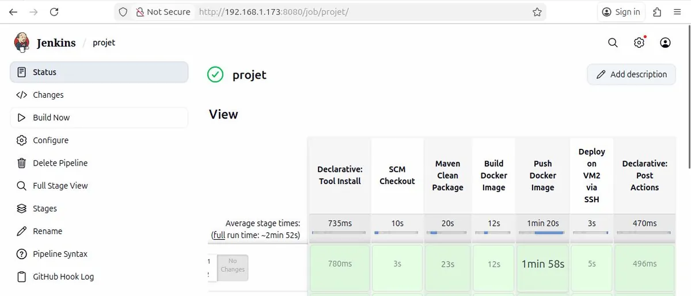

Pipeline CI/CD avec Jenkins, Docker & MySQL
Du commit au déploiement : une chaîne automatisée qui construit, conteneurise et déploie une application Java à chaque modification.

Objectif
Mettre en place un pipeline CI/CD complet pour une application Java Spring MVC packagée en WAR, en automatisant le build Maven, la dockerisation et le déploiement sur des machines virtuelles avec Docker Compose.
Architecture du pipeline
- GitHubWebhook et exécution périodique (cron)
- JenkinsCheckout du code
- MavenBuild et packaging WAR
- DockerCréation de l’image
- DéploiementDocker Compose sur VM Ubuntu : Tomcat + MySQL
Fonctionnalités mises en œuvre
- CI/CD : pipeline Jenkins (checkout, build, image Docker, déploiement Docker Compose).
- Déclenchements : webhook GitHub et exécution périodique (cron).
- Base de données : MySQL, avec insertion automatique d’employés fictifs toutes les 30 secondes pour valider la chaîne.
- Supervision : suivi des conteneurs avec
docker stats.
Stack technique
| Application | Java, Spring MVC, Maven, Tomcat |
|---|---|
| CI/CD | Jenkins, webhooks GitHub |
| Conteneurs | Docker, Docker Compose |
| Données | MySQL |
| Infrastructure | Linux (Ubuntu Server), machines virtuelles |
Code source
Le code du projet est public sur GitHub : github.com/Ayasoukii/java-web-app-docker.